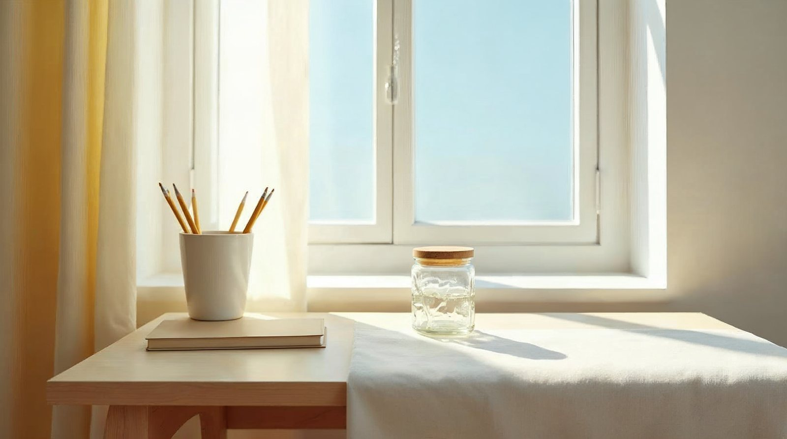
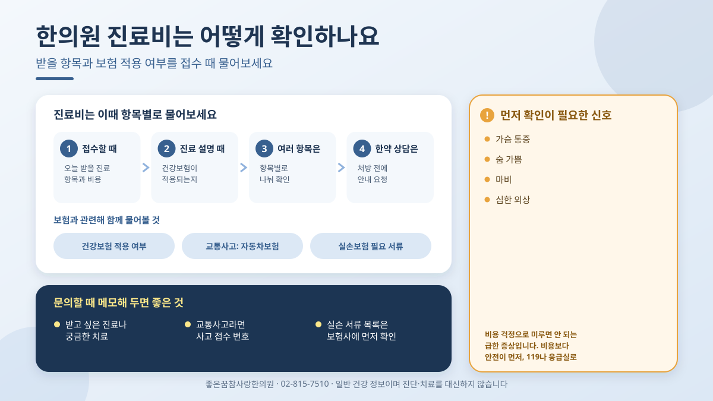

이종호 한의사 감수좋은꿈참사랑한의원 대표원장 (한의사 면허번호 19769)발행 2026-11-23 · 수정 2026-11-26
이 글의 차례
- 왜 항목별로 확인해야 할까요
- 먼저 이렇게 여쭙니다
- 비용을 확인하는 방법
- 왜 비용 걱정이 진료를 미루게 만들까요
- 방문 전 전화로 물을 때는 이렇게 말씀해 보세요
- 비용을 묻는 것이 실례가 될까요?
- 치료 항목과 비용은 어떻게 함께 정하나요?
- 처음 오신 날 진료실에서는 어떤 순서로 진행되나요?
- 통원 횟수와 기간이 걱정된다면
- 진료 중에 계획이 바뀌면 비용도 다시 물어보세요
- 가족이 함께 다니거나 대신 문의할 때
- 비용 부담을 덜려면 집에서 무엇을 이어 가면 좋을까요?
- 한약 상담에서는 무엇을 물으면 좋을까요?
- 결정을 서두르지 않으셔도 됩니다
- 보험과 관련해 물어볼 것
- 교통사고로 오신다면 무엇을 챙길까요?
- 실손보험 서류는 어떻게 챙길까요?
- 영수증은 어떻게 보관하면 좋을까요?
- 진료비를 묻기 전에 스스로 정리해 보세요
- 한의원에서 함께 살필 수 있는 경우
- 문의하실 때 메모해 두면 좋은 것
- 이런 증상은 먼저 확인이 필요합니다
진료비는 접수할 때나 진료 설명을 들을 때 받을 항목별로 물어보시면 가장 정확하게 알 수 있습니다. 진료를 받기 전에 비용이 궁금한 것은 당연합니다. 비용을 확인하는 방법과 함께 물어보면 좋은 보험 관련 질문을 정리합니다.
몸은 계속 불편한데 한의원 문 앞에서 발걸음이 멈출 때가 있습니다. "얼마나 나올까", "한 번 시작하면 계속 다녀야 하는 건 아닐까" 하는 걱정 때문이지요. 그런데 막상 비용을 물어보려니 실례가 될 것 같아 입이 떨어지지 않습니다.
저는 비용을 묻는 것이 전혀 실례가 아니라고 생각합니다. 오히려 미리 묻고 알고 시작해야 마음 편히 진료를 이어 갈 수 있습니다. 이 글에는 언제, 무엇을, 어떻게 물으면 좋은지, 그리고 보험과 서류는 어떻게 챙기면 좋은지를 차례로 적었습니다.
왜 항목별로 확인해야 할까요
- 진료비는 진찰 뒤 정해지는 치료 항목과 건강보험 적용 여부에 따라 달라져 미리 한 가지로 말하기 어렵습니다.
- 같은 날 여러 진료를 함께 받으면 항목마다 적용 기준이 달라질 수 있습니다.
- 교통사고처럼 자동차보험으로 진행하는 경우는 처리 방식이 따로 있습니다.
- 실손보험은 가입한 상품마다 지급 범위와 필요한 서류가 달라 보험사 확인이 먼저입니다.
- 진료 설명을 들은 뒤 비용과 일정을 함께 고려해 받을 항목을 정하실 수 있습니다.
- 건강보험이 적용되지 않는 항목은 의료기관마다 기준이 다를 수 있어 받기 전에 확인하는 것이 좋습니다.
먼저 이렇게 여쭙니다
진료비를 안내해 드리기 전에 이런 것부터 여쭙니다.
- 오늘 가장 불편한 곳과 받아 보고 싶은 진료가 있는지
- 교통사고나 실손보험처럼 함께 챙길 서류가 있는지
- 비용이나 통원 횟수에서 부담되는 점이 있는지
비용을 확인하는 방법
- 방문 전에 궁금한 점은 전화(02-815-7510)로 먼저 여쭤 보셔도 됩니다.
- 접수할 때 오늘 받을 진료 항목과 비용을 함께 물어보세요.
- 진료 설명을 듣는 자리에서 "이 치료는 건강보험이 적용되나요?"라고 물어보세요.
- 여러 항목을 함께 받을 때는 항목별로 나눠 확인하세요.
- 한약 상담은 복용 기간과 구성에 따라 달라지므로 처방 전에 안내를 요청하세요.
왜 비용 걱정이 진료를 미루게 만들까요
모르는 것은 크게 느껴집니다. 얼마가 들지 모르니 머릿속에서 비용은 점점 커지고, 그러다 보면 "조금 더 참아 보자"는 쪽으로 마음이 기울지요. 그사이 불편은 몸에 자리를 잡고, 아픈 쪽을 피하는 자세가 굳어 다른 곳까지 불편해지기도 합니다.
예를 들어 어깨가 아파 몇 달을 참은 경우, 팔을 덜 쓰려다 목과 등까지 함께 굳어 있는 일이 흔합니다. 처음 불편할 때 한 번 물어보고 시작했다면 살필 곳이 더 적었을 수도 있습니다. 그래서 비용이 걱정될수록 먼저 물어보시라고 말씀드립니다.
방문 전 전화로 물을 때는 이렇게 말씀해 보세요
전화로 비용을 물으실 때는 불편한 곳과 받아 보고 싶은 진료를 함께 말씀해 주시면 안내가 쉬워집니다. 예를 들어 "목이 아파서 처음 가 보려는데요, 추나도 받아 볼 수 있나요? 건강보험이 되는지도 궁금합니다"처럼 여쭤 보세요.
다만 전화로는 진찰 전이라 어떤 치료를 받게 될지 정해지지 않은 상태입니다. 그래서 정확한 항목과 비용은 진찰 뒤 설명을 들으며 다시 확인하시게 됩니다. 전화로는 대략적인 궁금증을 덜고, 진료실에서 확정한다고 생각하시면 편합니다.
비용을 묻는 것이 실례가 될까요?
전혀 그렇지 않으니 편하게 물어보셔도 됩니다. 진료는 몸을 맡기는 일이고, 비용은 그 일을 이어 가는 데 꼭 필요한 정보입니다. 미리 알지 못한 채 진료를 시작했다가 나중에 부담을 느껴 그만두게 되면, 몸에도 마음에도 아쉬움이 남습니다.
그래서 저는 궁금하신 것을 편하게 물어보시길 권합니다. "오늘은 어떤 치료를 받게 되나요?", "그건 비용이 어떻게 되나요?", "다음에도 같은 치료를 받게 되나요?" 이런 질문은 진료를 잘 받기 위한 당연한 질문입니다.
치료 항목과 비용은 어떻게 함께 정하나요?
모든 치료를 모든 분께 하지 않습니다. 진찰한 뒤 지금 몸에 필요한 것만 고르고, 치료 전에 무엇을 왜 하는지 말씀드립니다. 그 설명을 들으시면서 비용도 함께 물어보시면, 받을 치료를 정하는 데 도움이 됩니다.
예를 들어 통증 진료라면 가장 아픈 곳은 원장이 직접 침이나 추나, 체외충격파 같은 치료를 하고, 그 밖의 불편한 곳은 물리치료로 이어서 살피는 식으로 진행합니다. 이때 각각이 어떤 항목인지, 오늘 어떤 것을 받게 되는지 물어보시면 항목별로 안내받으실 수 있습니다.
설명을 들은 뒤 비용이 부담된다면 그렇다고 말씀해 주세요. 지금 상태에서 무엇을 먼저 할지, 무엇은 집에서 생활 요령으로 대신해 볼 수 있을지 함께 의논합니다.
처음 오신 날 진료실에서는 어떤 순서로 진행되나요?
가장 불편한 곳과 시작된 때를 먼저 듣고, 잠과 소화, 몸의 온기, 대소변을 여쭙습니다. 진맥은 모든 분께 하고, 서고 걷고 앉는 동작을 확인합니다. 통증 부위를 눈으로 확인할 필요가 있다고 판단되면 초음파로 살피기도 합니다.
그 뒤 오늘 할 치료와 그 이유를 말씀드립니다. 이때가 비용을 묻기 가장 좋은 때입니다. 무엇을 받게 되는지 들은 바로 그 자리에서 항목별 비용과 보험 적용 여부를 여쭤 보세요. 설명을 들으며 함께 물으시면 헷갈릴 일이 줄어듭니다.
통원 횟수와 기간이 걱정된다면
비용만큼 걱정되는 것이 "얼마나 다녀야 하나"입니다. 몸 상태와 불편이 이어진 기간, 생활의 부담에 따라 달라지기 때문에 처음부터 정확한 횟수를 말씀드리기는 어렵습니다. 대신 치료 뒤 몸이 어떻게 반응하는지를 보며 다음 방문 시기를 그때그때 말씀드립니다.
다니기 어려운 사정이 있다면 미리 알려 주세요. 예를 들어 일주일에 한 번밖에 오실 수 없는 경우, 그 간격에 맞춰 집에서 해 볼 것을 더 자세히 알려 드립니다. 방문 사이의 생활이 회복의 많은 부분을 차지하기 때문입니다.
처음 몇 번은 조금 촘촘하게 오시고, 몸이 안정되면 간격을 넓혀 가는 경우가 많습니다. 간격을 넓힐 때도 그동안의 변화를 보며 함께 정하니, 미리 걱정하지 않으셔도 됩니다.
진료 중에 계획이 바뀌면 비용도 다시 물어보세요
몇 번 진료를 받다 보면 몸 상태에 따라 치료가 달라지기도 합니다. 처음에는 침 위주였다가 추나를 함께 하게 되거나, 통증이 줄어 물리치료만 이어 가게 되는 식이지요. 이렇게 받는 항목이 바뀔 때는 그때그때 비용도 다시 물어보세요.
새로운 치료를 권해 드릴 때는 무엇을 왜 하는지 먼저 말씀드립니다. 그 자리에서 비용과 보험 적용 여부를 함께 여쭤 보시고, 충분히 이해하신 뒤에 받으시면 됩니다. 궁금한 것을 묻지 않고 넘기시는 것보다 그 편이 서로 마음 편합니다.
가족이 함께 다니거나 대신 문의할 때
부모님이나 아이의 진료비를 가족이 대신 문의하는 경우도 많습니다. 이때는 진료받을 분이 어떤 진료를 받게 되는지, 보험 서류가 필요한지 함께 물어보세요. 여러 가족이 함께 다닌다면 영수증과 서류를 사람별로 나눠 받아 두시면 나중에 정리하기 편합니다.
어르신은 비용이 부담돼도 말씀을 아끼시는 경우가 있습니다. 자녀분이 함께 오실 수 있다면 설명을 같이 들으시고, 궁금한 점을 대신 여쭤 주세요. 어르신이 마음 편히 진료를 이어 가시는 데 큰 힘이 됩니다.
비용 부담을 덜려면 집에서 무엇을 이어 가면 좋을까요?
진료실에 오시는 시간은 일주일 중 아주 짧습니다. 나머지 시간을 어떻게 보내느냐가 몸의 회복에 큰 몫을 합니다. 저는 잘 먹고, 잘 싸고, 잘 자고, 마음 편하고, 몸 따뜻하게, 이 다섯 가지를 회복의 바탕으로 봅니다. 이 바탕이 잘 지켜지면 진료의 도움도 더 오래 이어집니다.
진료를 마칠 때 집에서 해 볼 생활 요령을 말씀드립니다. 오래 앉는 자세를 바꾸는 법, 잠드는 시각을 맞추는 법, 아픈 곳을 따뜻하게 하는 법처럼 돈이 들지 않는 것들입니다. 이런 요령을 꾸준히 이어 가시면 방문 사이의 몸이 덜 흔들립니다.
한약 상담에서는 무엇을 물으면 좋을까요?
한약은 진단과 상담을 거친 뒤 처방합니다. 주된 불편과 함께 소화, 잠, 몸의 온기, 대소변, 드시는 약, 간이나 신장 상태까지 확인한 뒤에 처방 방향과 복용 기간이 정해집니다. 그래서 비용도 이 방향이 정해진 뒤에 안내받으실 수 있습니다.
상담 자리에서 "얼마 동안 먹게 되나요?", "비용은 어떻게 되나요?", "먹는 동안 다시 와서 확인하나요?"를 물어보세요. 처방 전에 충분히 듣고 결정하셔도 됩니다. 지금 드시는 양약이 있다면 임의로 끊지 마시고 상담 때 알려 주세요.
결정을 서두르지 않으셔도 됩니다
설명을 듣고 바로 결정하기 어려우실 때가 있습니다. 특히 한약처럼 일정 기간 이어지는 진료라면 가족과 상의하고 싶으실 수도 있지요. 그럴 때는 오늘은 필요한 치료만 받고, 생각해 보신 뒤에 다음 방문 때 정하셔도 됩니다.
궁금한 점이 나중에 떠오르면 전화로 다시 물어보셔도 괜찮습니다. 충분히 이해하고 납득하신 뒤에 시작하는 진료가 오래 편하게 이어집니다. 메모해 두었다가 다음 진료 때 한꺼번에 물으셔도 됩니다. 저는 그 과정을 서두르게 하고 싶지 않습니다.
보험과 관련해 물어볼 것
- 건강보험이 적용되는 항목인지 여부
- 교통사고로 오셨다면 자동차보험으로 진행할 수 있는지 여부
- 실손보험 청구에 필요한 서류가 있는지 여부
- 진료비 영수증과 세부 내역서가 필요한지 미리 확인하기
건강보험(또는 자동차보험) 적용 여부는 방문 전 전화로 확인해 주세요. 받으실 진료에 따라 달라질 수 있어 통화로 여쭤 보시는 것이 정확합니다.
교통사고로 오신다면 무엇을 챙길까요?
교통사고 뒤 오신다면 보험사에서 받은 사고 접수 번호를 챙겨 오세요. 접수할 때 자동차보험으로 진행하려 한다고 말씀해 주시면 안내받으실 수 있습니다. 사고 날짜와 불편이 시작된 날도 함께 적어 오시면 좋습니다.
보험 처리에 관한 자세한 내용은 보험사마다 다를 수 있어, 보험사 담당자에게도 함께 확인해 두세요. 응급실이나 병원에서 받은 검사 결과가 있다면 함께 가져오시면 진료에 참고합니다. 사고 뒤 잠이 얕아지거나 운전이 불안해진 것처럼 몸 밖의 변화가 있었다면 그것도 진료 때 함께 말씀해 주세요. 사고 경위와 함께 들어야 지금의 불편을 더 잘 이해할 수 있습니다.
실손보험 서류는 어떻게 챙길까요?
실손보험은 가입한 상품마다 보장 범위와 필요한 서류가 다릅니다. 그래서 먼저 가입한 보험사에 한의원 진료를 청구할 때 어떤 서류가 필요한지 물어보시고, 그 목록을 메모해 오세요. 접수할 때 말씀해 주시면 발급을 안내해 드립니다.
서류를 나중에 따로 받으러 오시기 번거롭다면, 진료받는 날 미리 말씀해 주세요. 여러 번 다니신다면 한 번에 모아서 받을지, 그때그때 받을지도 미리 정해 두면 편합니다.
영수증은 어떻게 보관하면 좋을까요?
진료비 영수증은 받는 날 바로 휴대폰으로 사진을 찍어 두세요. 종이는 잃어버리거나 글씨가 흐려지기 쉽지만 사진은 날짜별로 남습니다. 실손보험을 청구하실 계획이라면 진료 날짜별로 봉투나 파일에 모아 두면 나중에 한 번에 정리하기 쉽습니다.
연말에 의료비를 정리하실 때도 이렇게 모아 둔 영수증이 도움이 됩니다. 가족이 함께 다닌다면 이름별로 나눠 두세요.
영수증을 정리하다 보면 내가 언제, 얼마나 자주 진료를 받았는지도 한눈에 보입니다. 방문 간격이 벌어졌던 때와 불편이 다시 커졌던 때가 겹치는지 살펴보는 것도 몸을 돌보는 데 도움이 됩니다. 진료 날짜 옆에 그날 몸 상태를 한 줄 적어 두면 더 좋습니다.
진료비를 묻기 전에 스스로 정리해 보세요
아래 질문에 답해 두시면 비용 상담이 훨씬 수월해집니다.
- 오늘 가장 해결하고 싶은 불편은 무엇인가요?
- 일주일에 몇 번, 어느 요일에 오실 수 있나요?
- 교통사고나 실손보험처럼 함께 챙길 서류가 있나요?
- 한약 상담도 받아 보고 싶으신가요?
- 비용이나 기간에서 꼭 지켜야 할 범위가 있나요?
마지막 질문은 말씀하기 어려우실 수 있지만, 알려 주시면 그 안에서 무엇을 먼저 할지 함께 정하기 쉬워집니다.
한의원에서 함께 살필 수 있는 경우
- 치료를 꾸준히 받아야 할지 비용 때문에 고민되는 경우 필요한 항목과 우선순위를 함께 의논합니다.
- 비용과 통원 횟수가 모두 부담되는 경우 집에서 해 볼 수 있는 방법부터 함께 정리합니다.
- 여러 치료 중 무엇부터 받을지 고민되는 경우 지금 상태에서 우선할 것을 함께 정합니다.
처음 오시면 접수한 뒤 원장이 모든 분께 맥부터 짚으며 불편한 곳과 생활을 여쭙습니다. 필요하면 혀와 배를 살피거나 초음파로 확인하고, 상태에 맞는 치료와 다음 방문 안내로 이어집니다. 다시 오시면 지난번 이야기부터 이어서 여쭙습니다.

문의하실 때 메모해 두면 좋은 것
- 받고 싶은 진료 항목이나 궁금한 치료
- 교통사고라면 보험사 사고 접수 번호
- 실손보험 청구에 필요한 서류 목록(보험사에 미리 확인)
- 궁금한 점(보험 적용, 횟수, 기간)을 적은 메모
이런 증상은 먼저 확인이 필요합니다
- 비용 걱정으로 미루면 안 되는 급한 증상(가슴 통증, 숨 가쁨, 마비, 심한 외상)
이런 신호가 있으면 한의원보다 가까운 병원이나 응급실을 먼저 찾으세요.

여쭙는 것
- 오늘 가장 불편한 곳과 받아 보고 싶은 진료가 있는지
- 교통사고나 실손보험처럼 함께 챙길 서류가 있는지
- 비용이나 통원 횟수에서 부담되는 점이 있는지
한의원에서 함께 살필 것
- 치료를 꾸준히 받아야 할지 비용 때문에 고민되는 경우 필요한 항목과 우선순위를 함께…
- 비용과 통원 횟수가 모두 부담되는 경우 집에서 해 볼 수 있는 방법부터 함께 정리합…
- 여러 치료 중 무엇부터 받을지 고민되는 경우 지금 상태에서 우선할 것을 함께 정합니다.
먼저 확인이 필요한 신호
- 비용 걱정으로 미루면 안 되는 급한 증상(가슴 통증, 숨 가쁨, 마비, 심한 외상)
한눈에 보는 표
| 구분 | 핵심 |
|---|---|
| 여쭙는 것 | 오늘 가장 불편한 곳과 받아 보고 싶은 진료가 있는지 교통사고나 실손보험처럼 함께 챙길 서류가 있는지 |
| 한의원에서 함께 살필 것 | 치료를 꾸준히 받아야 할지 비용 때문에 고민되는 경우 필요한 항목과 우선순위를 함께 의논합니다. 비용과 통원 횟수가 모두 부담되는 경우 집에서 해 볼 수 있는 방법부터 함께 정리합니다. |
| 먼저 확인이 필요한 신호 | 비용 걱정으로 미루면 안 되는 급한 증상(가슴 통증, 숨 가쁨, 마비, 심한 외상) |
자주 묻는 질문
비용을 진료 전에 알 수 있나요?
접수나 진료 설명 때 항목별로 문의하시면 안내합니다.
건강보험이 적용되는지 어떻게 아나요?
받으려는 진료 항목마다 적용 여부와 조건이 다릅니다. 적용 여부와 비용은 방문 전 전화(02-815-7510)로 확인하시거나 접수 때 문의해 주세요.
한약 비용은 언제 알 수 있나요?
처방 방향과 복용 기간이 정해진 뒤 항목별로 안내받으실 수 있습니다.
실손보험 청구 서류는 어떻게 받나요?
필요한 서류는 보험사마다 다를 수 있어 먼저 보험사에 확인하신 뒤, 접수할 때 말씀해 주시면 발급을 안내해 드립니다.
설명을 듣고 일부 치료만 받아도 되나요?
네. 설명을 들으신 뒤 궁금하거나 부담되는 점을 말씀해 주시면 지금 상태에서 무엇을 먼저 할지 함께 정합니다.
좋은꿈참사랑한의원은 재진 때 지난번 이야기부터 이어서 여쭙니다. 진료시간과 예약은 오시는 길에서 확인하세요.
어디서 상담받을 수 있나요?
좋은꿈참사랑한의원은 서울 동작구 만양로2길 2 신성빌딩 3층·5층(서울 동작구 상도동, 7호선 상도역 3번 출구 근처)에 있습니다. 한의사 3명(이종호 대표원장, 조영기 수석진료원장, 정원영 진료원장)이 진료합니다. 진료시간은 평일 09:30~20:00(점심 13:00~14:00), 토·일·공휴일 09:30~15:00이며, 방문 전 전화로 확인을 권합니다. 예약은 네이버 예약, 카카오톡 상담, 전화 02-815-7510로 받습니다.
이 글은 일반적인 건강 정보이며 개인의 진단이나 치료를 대신하지 않습니다. 증상이 있거나 복용 중인 약이 있다면 진료를 통해 확인하세요. 치료 효과는 개인마다 다를 수 있습니다.
작성 기준: 일반적으로 알려져 있는 건강 정보를 참고해 정리했습니다(대표원장 감수). 증상 기록은 1~2주 동안 하루 1회, 비슷한 시간에 적어 오시면 지난 상태와 비교하기 쉽습니다.